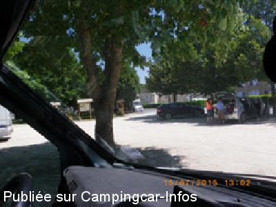
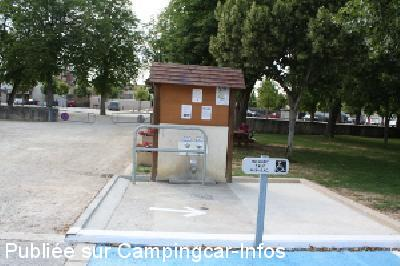
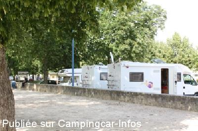

ASN = Aire de services avec stationnement nuit possible de :
LUSSAC LES CHÂTEAUX
(N° 390)
Accès/adresse :
Place de l'Amitié entre les Peuples
Champ de Foire
86320 LUSSAC LES CHÂTEAUX
Champ de Foire
86320 LUSSAC LES CHÂTEAUX
Latitude : (Nord) 46.40279° Décimaux ou 46° 24′ 10′′
Longitude : (Est) 0.72562° Décimaux ou 0° 43′ 32′′
Tarif : Gratuit
Type de borne : Artisanale
Services :


Tous commerces
Autres informations :
ouverte toute l'année,
10 emplacements,
services inaccessibles en période de gel.
Pas de stationnement le jour du marché le vendredi matin
Tel Office du Tourisme + 33 (0)549 845 773
Tel + 33 (0)549 484 033
http://www.lussac-les-chateaux.fr
Autre possibilité de stationnement à l'aire naturelle sur les bords de la Vienne
A proximité : plan d'eau, parcours jeux pour les enfants, aire de pique-nique, pêche, grottes préhistoriques et monuments.

Le 18/07/2015 par eastwood

Le 13/08/2014 par Mairie de Lussac-Les-Châteaux

Le 13/08/2014 par MAIRIE DE LUSSAC-LES-CHÂTEAUX
de
Boris
le 23/10/2015 :
De passage en août 2015 , en centre ville !! attention marché le vendredi , pas de place .
Vidange des eaux avec une barre devant ??? difficile d'accès , parking bruyant et pas agréable
De passage en août 2015 , en centre ville !! attention marché le vendredi , pas de place .
Vidange des eaux avec une barre devant ??? difficile d'accès , parking bruyant et pas agréable
de
michel
le 10/09/2015 :
Et voilà, encore une fois, un intégral immatriculé dans le 56 à vidangé ses eaux usées dans le regard réservé aux eaux de pluies. Le regard "vidange" est pourtant bien situé sur la plateforme et signalé par une grosse flèche!!!!
Après on s'étonne que nous ne sommes plus accepté en centre ville.
Et voilà, encore une fois, un intégral immatriculé dans le 56 à vidangé ses eaux usées dans le regard réservé aux eaux de pluies. Le regard "vidange" est pourtant bien situé sur la plateforme et signalé par une grosse flèche!!!!
Après on s'étonne que nous ne sommes plus accepté en centre ville.
de
eastwood
le 20/07/2015 :
L'aire est en plein centre ville mais elle est plutôt bruyante et la poussière est omniprésente. Elle est tout prêt de l'office de tourisme et possède des WC fixes. Par contre, pas de boucher dans le centre de Lussac, mais deux boulangeries et une pizzeria fort honorable. Nous ne sommes pas restés la nuit car trop de bruit et le soleil tapait trop. En face, il y a le musée du village et on peut aller à pied vers les ruines des piles du pont de Lussac. Le camping de Lussac est vraiment trop loin du centre ville à pied !
L'aire est en plein centre ville mais elle est plutôt bruyante et la poussière est omniprésente. Elle est tout prêt de l'office de tourisme et possède des WC fixes. Par contre, pas de boucher dans le centre de Lussac, mais deux boulangeries et une pizzeria fort honorable. Nous ne sommes pas restés la nuit car trop de bruit et le soleil tapait trop. En face, il y a le musée du village et on peut aller à pied vers les ruines des piles du pont de Lussac. Le camping de Lussac est vraiment trop loin du centre ville à pied !
de
kezako 53
le 29/09/2014 :
Pour répondre également à Mic15130, il existe à la sortie de LUSSAC-LES-CHATEAUX,en repartant vers POITIERS, juste avant le Pont,sur la gauche une aire de loisirs où les camping cars peuvent stationner (dixit l'office de tourisme) Lorsque l'on passe a LUSSAC, nous nous arrêtons toujours ici et l'endroit est calme.
Pour répondre également à Mic15130, il existe à la sortie de LUSSAC-LES-CHATEAUX,en repartant vers POITIERS, juste avant le Pont,sur la gauche une aire de loisirs où les camping cars peuvent stationner (dixit l'office de tourisme) Lorsque l'on passe a LUSSAC, nous nous arrêtons toujours ici et l'endroit est calme.
de
Michel L
le 07/07/2014 :
Suite au commentaire de Mic 15130,pourquoi se placer a proximité de la nationale alors que les C.Car ont la possibilité de se garer sur tout le "champ de foire" en dehors du jeudi soir car c'est le marché le lendemain matin.
Suite au commentaire de Mic 15130,pourquoi se placer a proximité de la nationale alors que les C.Car ont la possibilité de se garer sur tout le "champ de foire" en dehors du jeudi soir car c'est le marché le lendemain matin.
de
Mic15130
le 14/03/2012 :
De passage de 08/03/2012 pour une nuit. Aire plate, facilement accessible, au centre du village avec éclairage. (c'est en fait la place du village) Bien pour une halte nocturne. Juste un bémol, la nationale est proche et on entend très bien les camions... L'aire de Moulismes, une dizaine de kilomètres plus au sud, est également située sur la N147 mais en se garant au fond on entend beaucoup moins la circulation (par contre, pas d'éclairage).
De passage de 08/03/2012 pour une nuit. Aire plate, facilement accessible, au centre du village avec éclairage. (c'est en fait la place du village) Bien pour une halte nocturne. Juste un bémol, la nationale est proche et on entend très bien les camions... L'aire de Moulismes, une dizaine de kilomètres plus au sud, est également située sur la N147 mais en se garant au fond on entend beaucoup moins la circulation (par contre, pas d'éclairage).
de
lahillonne Michel
le 20/06/2011 :
L'aire de service de Lussac Les Chateaux a été réamenagée.L'hygiène s'en trouve renforcée par la pose de petits panneaux au dessus des 2 robinets poussoirs qui évite le gaspillage d'eau. La barrière sert à protéger le petit toit et le muret.
Les affichettes indique les différents services, les ballades à faire et l'histoire de la commune.
je vous envoie qulques photo de l'aménagement.
L'aire de service de Lussac Les Chateaux a été réamenagée.L'hygiène s'en trouve renforcée par la pose de petits panneaux au dessus des 2 robinets poussoirs qui évite le gaspillage d'eau. La barrière sert à protéger le petit toit et le muret.
Les affichettes indique les différents services, les ballades à faire et l'histoire de la commune.
je vous envoie qulques photo de l'aménagement.
de
Roxy63
le 06/06/2011 :
De passage le W.E de l'Ascension, l'A.S se situant au Champ de Foire est peu pratique. De plus les emplacements ne sont pas appropriés à des C.cars de + 6.50m.
Elle a toutefois le mérite d'éxister.
Je vous recommande par contre les emplacements à proximité de la riviére.
De passage le W.E de l'Ascension, l'A.S se situant au Champ de Foire est peu pratique. De plus les emplacements ne sont pas appropriés à des C.cars de + 6.50m.
Elle a toutefois le mérite d'éxister.
Je vous recommande par contre les emplacements à proximité de la riviére.
de
gérard
le 10/03/2011 :
Très belle aire et surtout au centre ville par contre c'est très bruyant pour la nuit continuellement des camions passe sur la route toute proche et l'emplacement pour les services sont en travaux
Très belle aire et surtout au centre ville par contre c'est très bruyant pour la nuit continuellement des camions passe sur la route toute proche et l'emplacement pour les services sont en travaux
de
kezako 53
le 04/10/2010 :
Nous avons trouvé l'aire très bruyante, dommage car le coin est sympa.
Nous avons trouvé l'aire très bruyante, dommage car le coin est sympa.
de
lefevre guy
le 26/04/2010 :
Très belle aire tout près de la vienne , avec de belles balades à pied ou en vélo, mais un peu bruyante à cause de la nationale toute proche , mais je vous la recommande pour passer une nuit
Très belle aire tout près de la vienne , avec de belles balades à pied ou en vélo, mais un peu bruyante à cause de la nationale toute proche , mais je vous la recommande pour passer une nuit
de
Gagcbr
le 19/04/2010 :
Déçu par l'aire, qui est proche de la nationale et du feu tricolore du centre... Passages de camions incessants. Elle est malgré tout en centre ville, proche des commerces
Déçu par l'aire, qui est proche de la nationale et du feu tricolore du centre... Passages de camions incessants. Elle est malgré tout en centre ville, proche des commerces